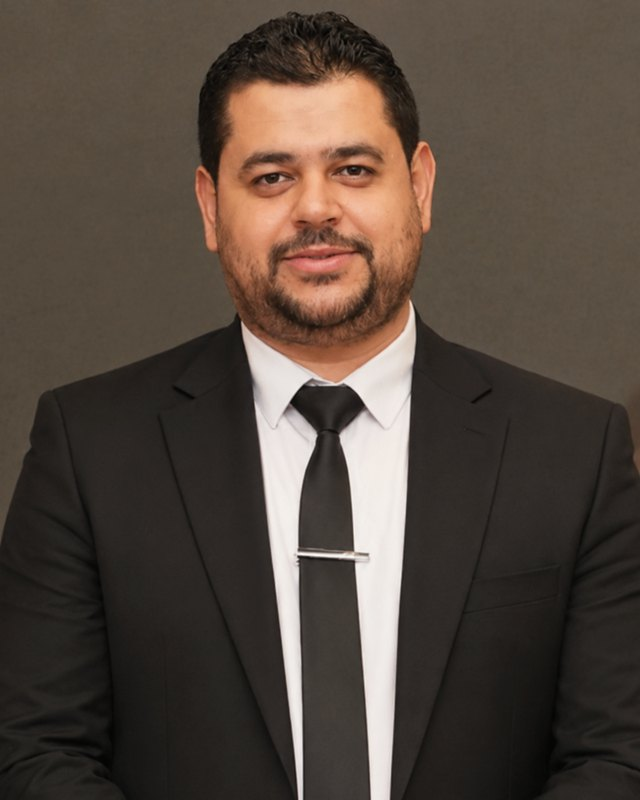

13+ years of full-cycle ERP/GRP implementations across 25+ enterprise and government clients in Saudi Arabia, covering HR, Payroll, Finance and Supply Chain.

I help organizations turn complex business requirements into systems that work, and get them live on time.
I'm a Senior Business Analyst and ERP/GRP Functional Consultant with 13+ years of full-cycle implementation experience across 25+ enterprise and government clients in Saudi Arabia, on Oracle-based ERP and .NET-based GRP platforms.
In recent years my work has centered on government digital transformation: HR, Payroll and Workforce Planning implementations for government entities and universities, aligned with Saudi Civil Service regulations, with integrations to Nafath, Tawakkalna and the Ministry of Human Resources and Social Development (MHRSD) platforms.
Earlier, I delivered Oracle-based ERP implementations (ASCON) for 20+ enterprise clients across 7+ sectors, including process improvements that reduced payroll processing time by 30%.
Where business analysis, delivery management and ERP/GRP domain knowledge meet.
How we enabled Najran University to meet MHRSD workforce planning requirements by moving data collection for 2,600 employees and faculty members into the self-service portal.
The challenge. MHRSD's workforce planning framework (top-down and bottom-up analysis, 3-year headcount targets) depends on complete, accurate employee data across 6 data templates, much of which the HR system did not yet hold.
From junior implementer in Alexandria, to Senior Oracle Systems Consultant at ASCON, one of the largest Oracle partners in Riyadh delivering local Oracle-based ERP solutions to the private sector, to leading government GRP implementations at HASIB.
Project management, agile delivery and enterprise architecture, on top of an accounting foundation.
Acknowledged by the clients and the company I deliver for.
“An outstanding ERP Consultant and a fantastic colleague. I witnessed firsthand strong analytical skills and the ability to successfully drive ERP implementations.”
Alexandria University · 2006–2010
The foundation that later shaped my Finance and Payroll implementations.
Institute of Computer Science and Technology · 2019–2021
Native
Professional working proficiency
Open to conversations on ERP/GRP implementations, HR & Payroll transformation, and government digital projects.
Riyadh, Saudi Arabia